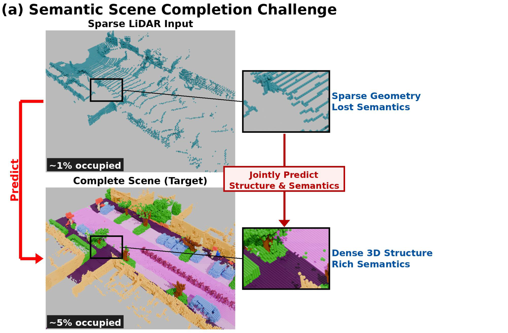
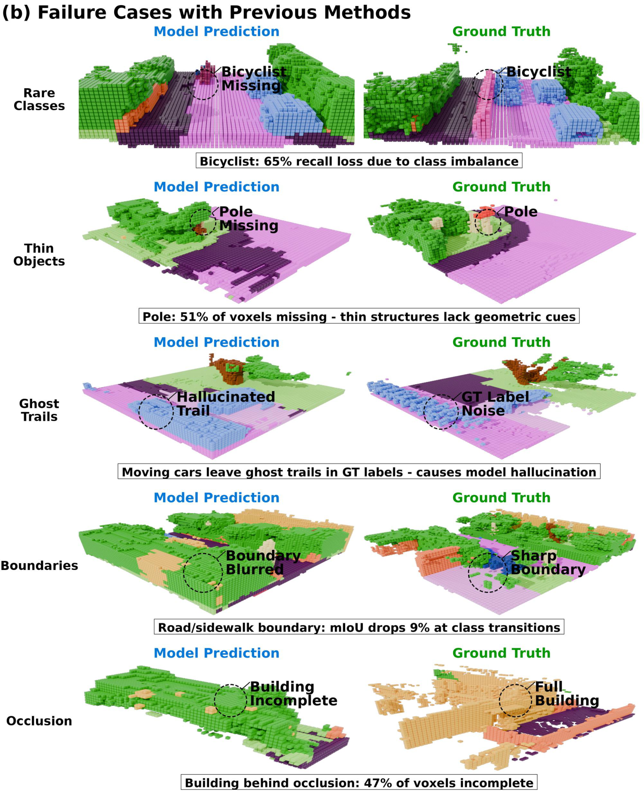
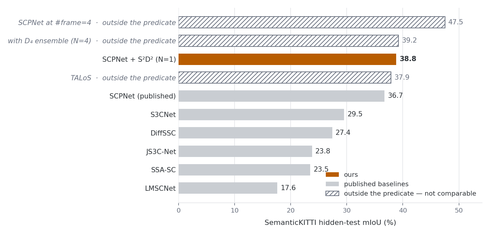
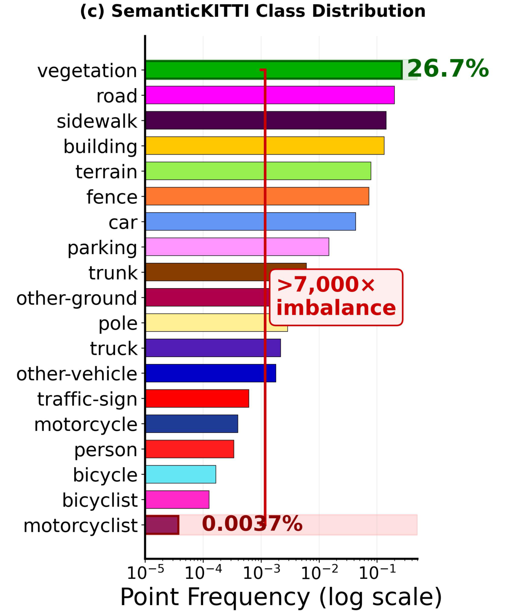
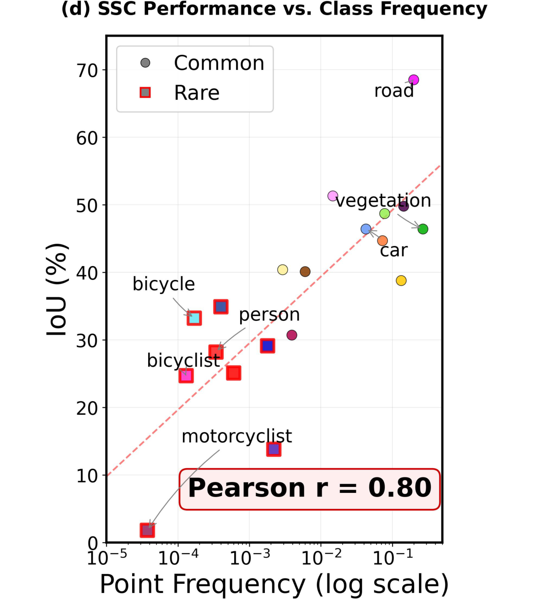
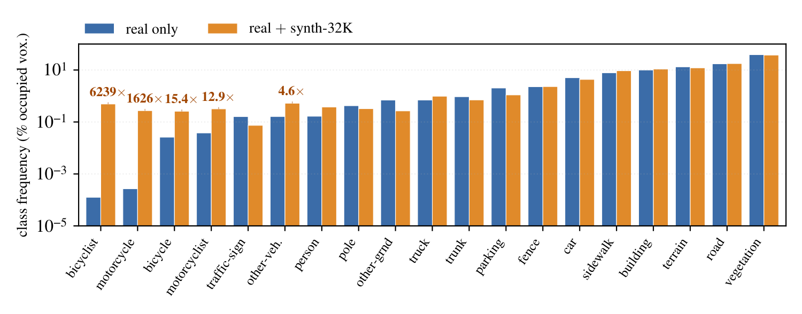
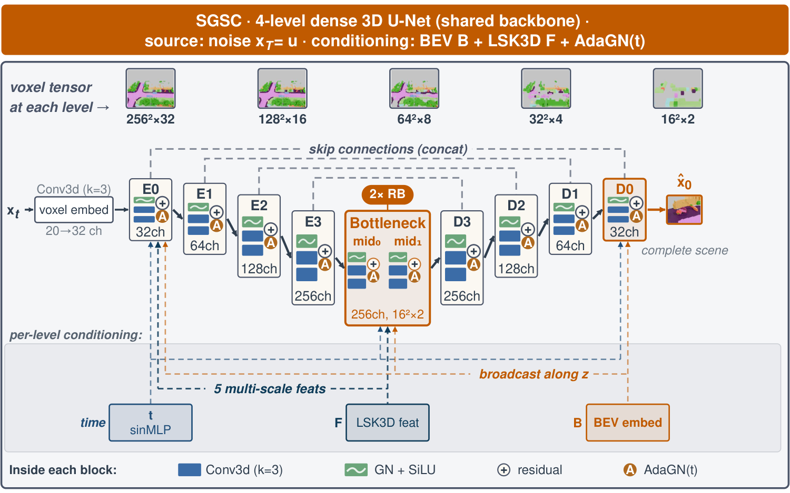

The task


Results


Interactive comparison
Switch scene and view; the camera holds, so the four views line up. The sparse input carries no labels, so it is painted one colour.
Loading scene…
The interactive 3D viewer needs JavaScript. The same comparison is in the qualitative figure above.
: frozen base · ours · N=4, +D4 TTA — outside the predicate, not the N=1 headline
Abstract
Outdoor LiDAR semantic scene completion (SSC) recovers a dense semantic voxel grid from a scan observing 1% of the target volume, under class imbalance beyond 7,000×. We recast SSC as generative semantic scene completion (GSSC): a single discrete-diffusion formulation in three roles. First, paired sparse–dense scene synthesis (PS3) generates matched sparse LiDAR observations with their dense semantic completions, addressing the long tail at its source and yielding the PS3-SemanticKITTI corpus we train on alongside SemanticKITTI. Second, semantic-guided generative scene completion (SGSC) completes the scene from sparse voxels with a multinomial discrete diffusion model conditioned on a bird’s-eye-view semantic map and a sparse 3D feature stream. Third, the same framework refines that output in a single flow-matching step: structured source discrete diffusion (S2D2). SGSC needs no completion base, and refining its own output improves it further. The same refinement improves the mIoU of every SSC base we test. On the strongest it sets, to our knowledge, the best causal, single-sweep, single-sample result on the SemanticKITTI hidden test: 38.8% mIoU at one step without test-time augmentation, +2.1 pp over the previous best published score. Four correction steps with eight-view test-time augmentation reach 39.2%. S2D2 needs neither base retraining nor test-time adaptation.
How it works
PS3 — paired sparse–dense synthesis




SGSC — completion from noise

S2D2 — one-step refinement

BibTeX
@article{chen2026gssc,
title = {Generative Semantic Scene Completion},
author = {Chen, Shi and Ge, WeifengAuthor names withheld},
journal = {Under review, IEEE Transactions on Pattern Analysis and
Machine Intelligence},
year = {2026}
}